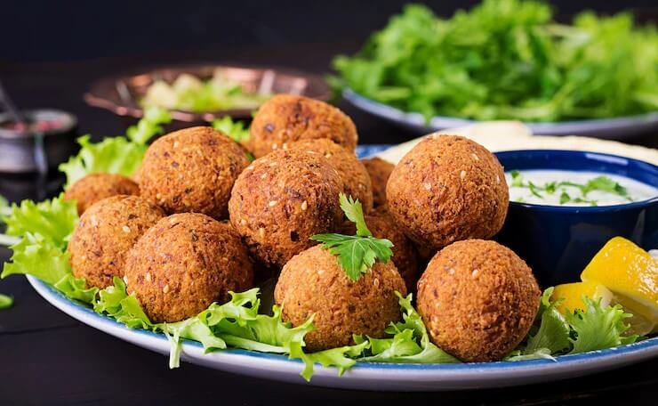

Falafel

Description
Tasty falafels!
Ingredients
- Chickpeas
- Garlic and fresh herbs
- Dried spices
- Baking powder
Steps
- Soak your chickpeas. Add dried chickpeas to a bowl, cover with several inches of water, and leave it overnight. They will triple in size and be ready in the morning.
- The next day, you will toss the soaked chickpeas and other falafel ingredients into a food processor and pulse until the mixture is chopped small, stopping before it purees into a paste.
- Chill the mixture for 15 minutes, then form into balls. I usually get around 18 falafel balls from this recipe. You can chill again or move on to cooking them.
- For the crispiest, most authentic falafel, fry them in oil.
Return to homepage